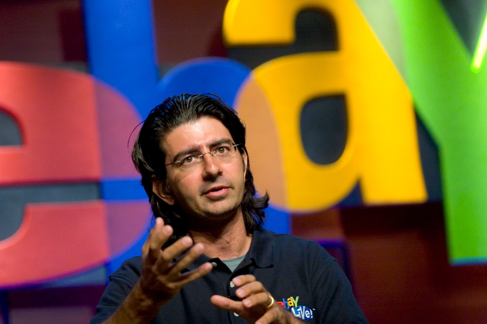
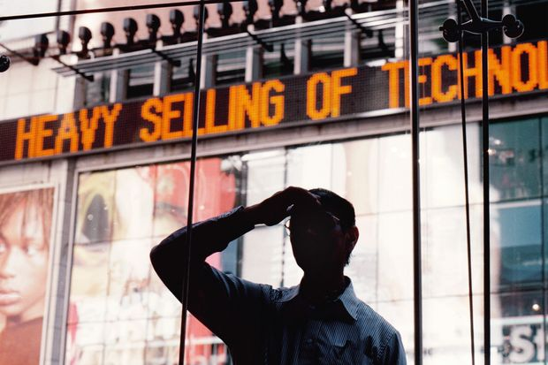

Dot Com Bubble
A new phase of capitalism was present with the rise of ecommerce. This new transformative technology that came with web development
provided a platform of new business opportunities. Ecommerce was growing as a new industry model with the revolution
of high-tech innovations. One of the companies that emerged from this was Amazon.
Amazon was founded by Jeff Besos. Originally from Wall Street he wanted to build something online to sell.
He made a very detailed business plan, did market analysis and research. But he quickly had to replan the business model due to the
fast pace changes of the market with a newer customer base who does online shopping. Software programmer Pierre came up with
Ebay as a place to do business. He was not interested in research and lists of effective markets. The website was first developed
to list an item, search for an item, and bid on an item. Both companies saw an exponential growth. This industry is unique for
producing companies with such high growth rates.
Amazon
Jeff Besos the founder of Amazon
The Rise of Ecommerce

Ebay
Pierre Omidyar the founder of Ebay
The Rise of Ecommerce
Microprocessor designers were developing transistors to be smaller and faster. According to Moore’s law of counteractivity: technology
grows exponentially even with small furtherment of breakthrough or number of users. The growth of the Internet gathers momentum as the number
of users increase the usefulness of the network which increases its value and in turn makes the internet more and more compelling as a result.
Breakthroughs in technology attracted investors for gains which led to a crash. Jeff Besos called Amazon the "world’s largest bookstore"
using his environment as an advantage. Stocks skyrocketed with investors hoping to benefit from the company’s potential. Tremendously controversial.
Most of the profits were sacrificed for the company’s growth due to Besos’s strategy to expand his business as fast as he could.
He convinced customers to trust him and his company with credentials and personal information. Mathematicians were hired to develop the encryption.
Several years were put into digital encryption to be used like padlock boxes. A public key is used for rendering secret data that has been set to the sender
while a private key is used by the receiver to take the encrypted data and decrypt them when needed. Ebay was used by collectors around the world.
Meg Whitman, who is a former member of Disney's marketing team and an executive at the toy company Hasbro, was recruited by investors. Stock soared
on the opening day as an IPO. Some financial experts pointed out Amazon will double their income within a year. The Dot com bubble started at this time.
Wall Street Dot Com Bubble
“Most of the entrepreneurs today weren’t around in ’99. They have no muscle memory of it whatsoever.” Bill Gurley (September 2016)
History of the Internet

Day traders were buying stocks in the morning and selling them at nights. Hundreds of people gathered to Silicon Valley to start up their own tech
business, spending millions of dollars off the dot com bubble. Everyone was in a frenzy and so this is said to be a time many lost their sense of
judgement. Professionals on Wall Street were at a dilemma. But, even if they knew there might be a stock market crash many were in a tough position and
wanted to make money off the Dot com bubble. Even if they knew companies didn't have a future potential, they were putting down money for the short
term profit. That’s how the Dot com bubble was taken place. Telecommunications was one of the sectors that companies were trying hard to pursue in as well
as Ecommerce. Using communication methods like morse codes, the internet allowed the massive amount of data and information to be access by everyone.
Market gap get way ahead of what the company could deliver. Many started to get worried about meeting expectations or even the fact that they will face the
consequences of the The federal government raising the interest to put the bubble to an end.
Wall street was blamed for the immense loss in the economy. The Ecommerce companies that did survive however, were able to become the leading companies of the market.
Ebay and Amazon were started early and were aggressive, therefore they succeeded. Fundamentally they took different approaches to this business model.
Ebay gave the users the freedom to control how the market worked and focused on what the people wanted. Amazon took the approach to empower their company which
is similar to Ebay. Sometimes this made the suppliers and publishures complain about the customer’s honest reviews. Amazon did not care about the complaint of their
suppliers because their job was to satisfy their customers. Setting the new standards for customer service was their mission. Entering the golden age of web,
the Dot com bubble was necessary to a certain point in that it made companies and investors aware of the dangers in this new industry. This also tells us the true
power of the web and the Ecommerce companies for surviving an economic crash and still being the leaders of the industry to this day.